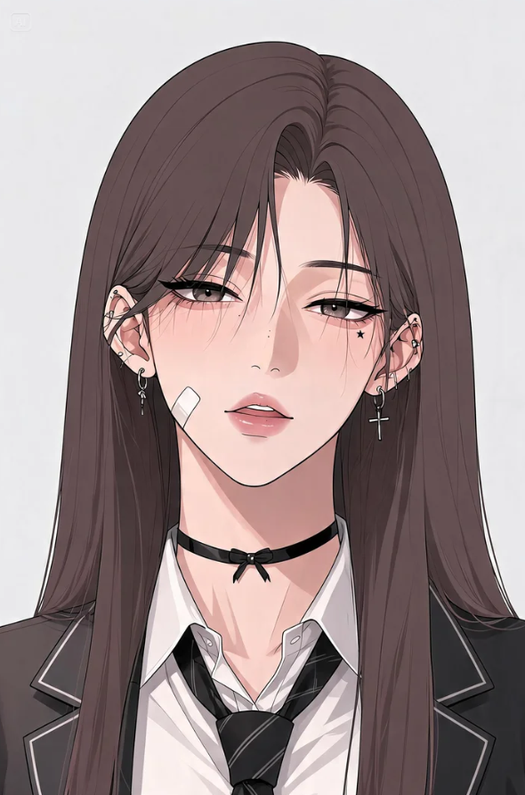
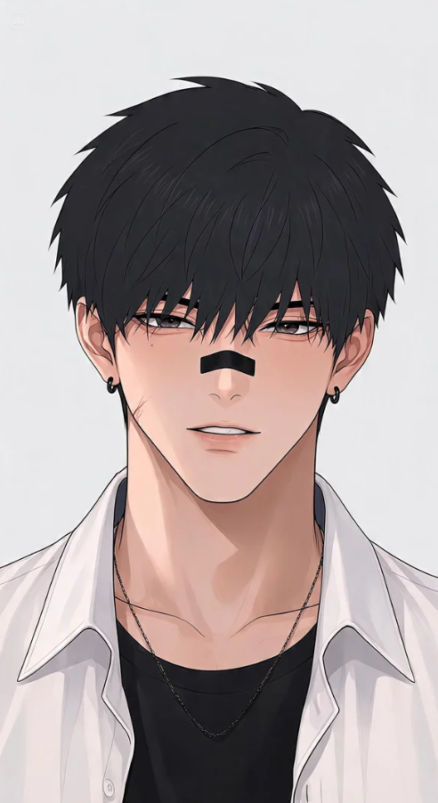
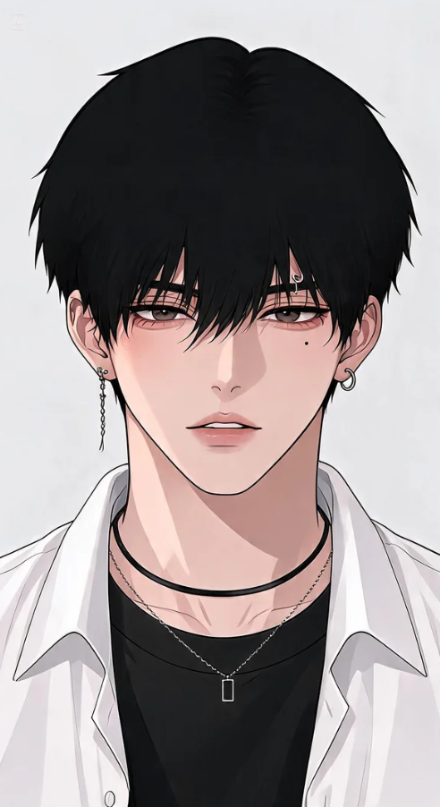

Characters

Queen of Trouble
Choi Ra Hee
최라희 · 11-A
Tidak percaya pada cinta — sampai tiga orang bodoh memaksanya percaya.
Lihat biodata lengkap

Black Fox
Baek Ryu Jin
백류진 · 11-B
Sudah suka Ra Hee sejak kelas 6 SD — dan tidak pernah pindah hati.
Lihat biodata lengkap

Mr. Perfect
Shin Joon Ho
신준호 · 11-A
Tidak pernah melirik orang seperti Ra Hee — sampai hari itu.
Lihat biodata lengkap

Red Flag Berjalan
Jung Woo Bin
정우빈 · 11-C
Awalnya mendekati Ra Hee karena taruhan — sampai itu berubah serius.
Lihat biodata lengkap